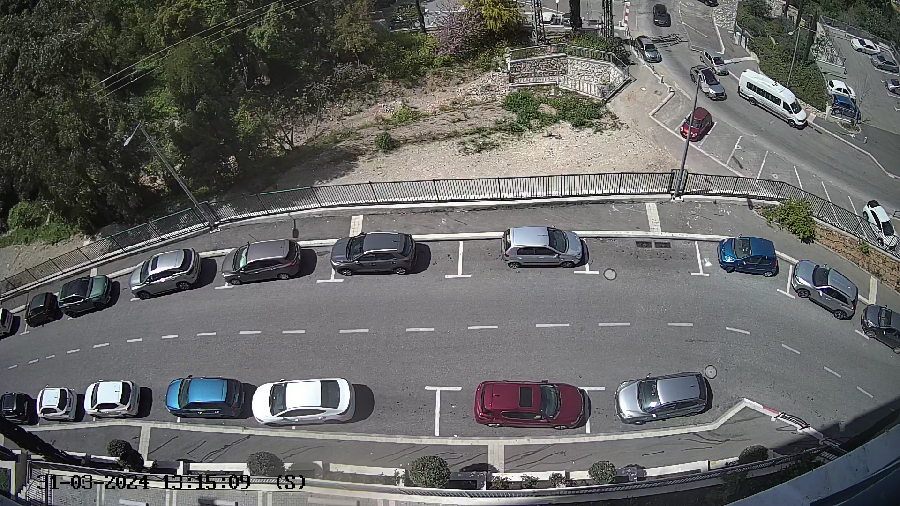
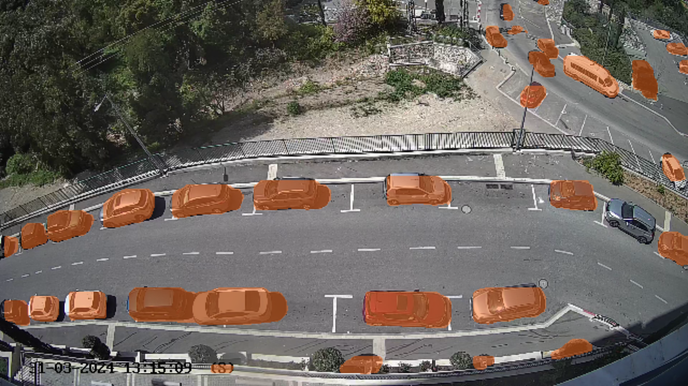
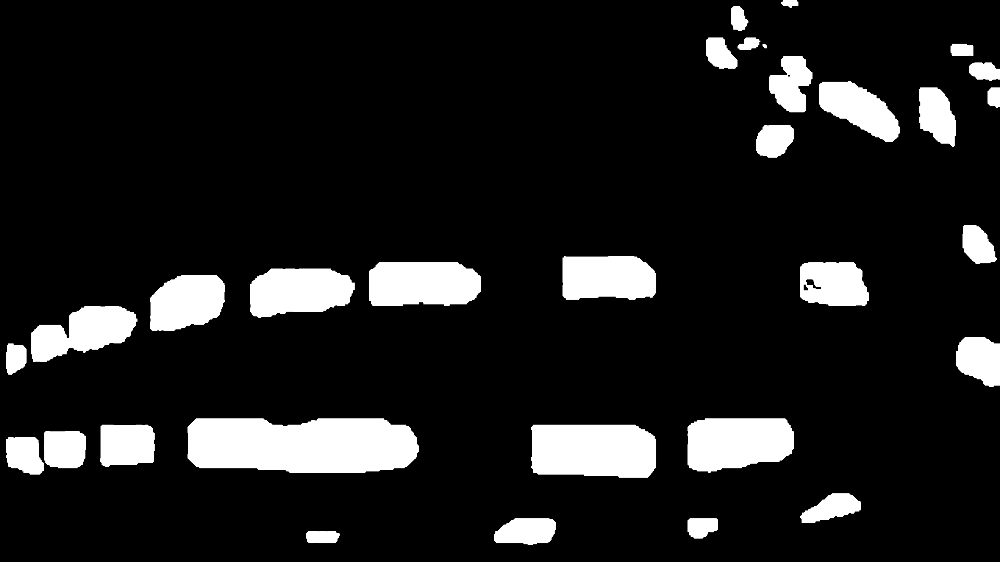
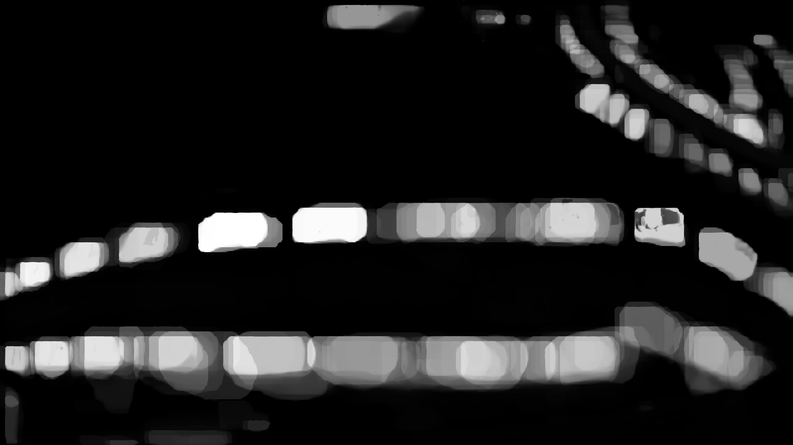

This section of the guide details the pre-processing steps required to configure your Parking Management System using visual data from cameras.
Capturing snapshots from video files at defined intervals is crucial for analyzing parking availability. Here's how it's done:
# Create the output folder if it doesn't exist
os.makedirs(output_folder, exist_ok=True)
# Iterate over each video in the input folder and its subfolder
for root, dirs, files in os.walk(input_folder):
for i, video_file in enumerate(files):
...

Using YOLO or similar models to segment the parking areas from the snapshots:
model = YOLO('yolov8s-seg.pt')
...

Creating HSV masks to identify relevant features in the parking area images:
# Define the color range for the orange masks in the HSV color space
hsv_lower_range = np.array([5, 100, 100], dtype=np.uint8)
...

Developing probability maps from the processed images to predict parking space availability:
# Initialize an empty array to accumulate the probabilities
accumulator = None
...

These steps provide the necessary data and insights for the system to effectively manage and monitor parking spaces.